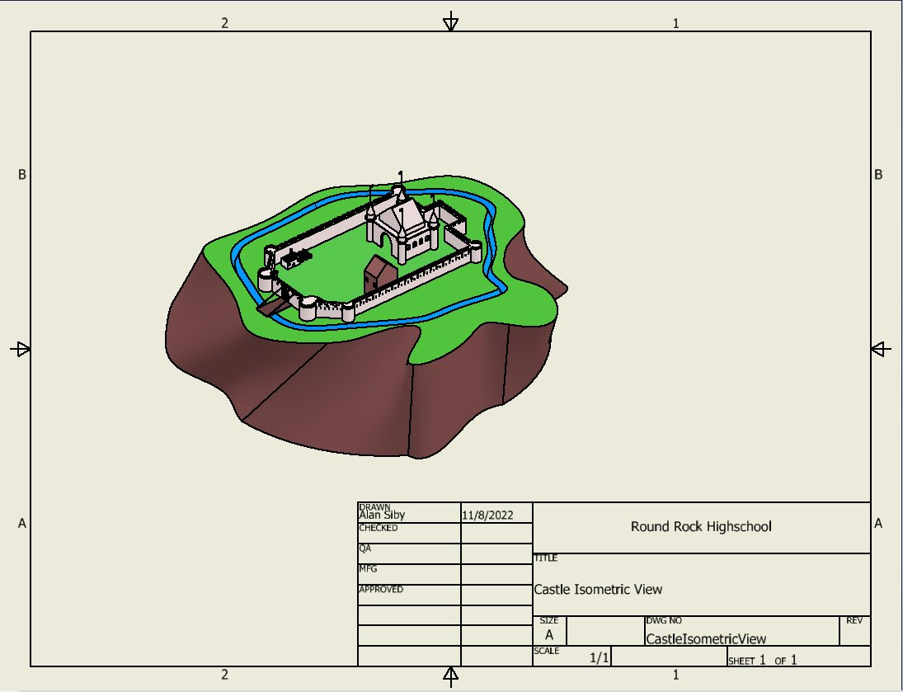
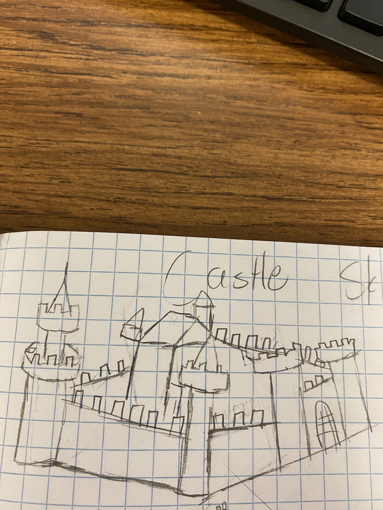
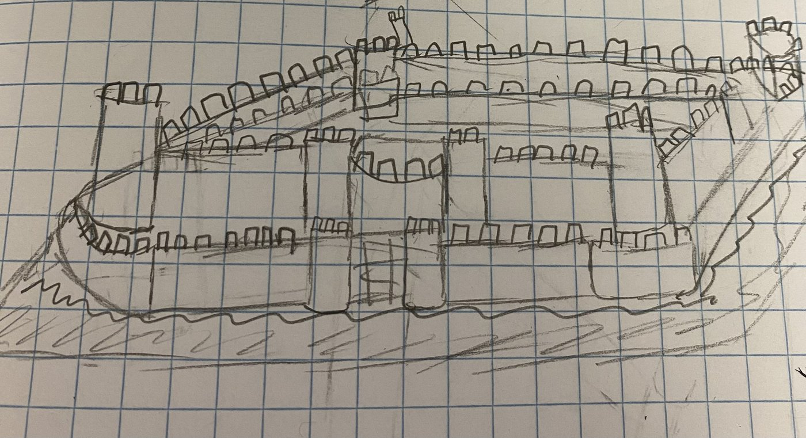
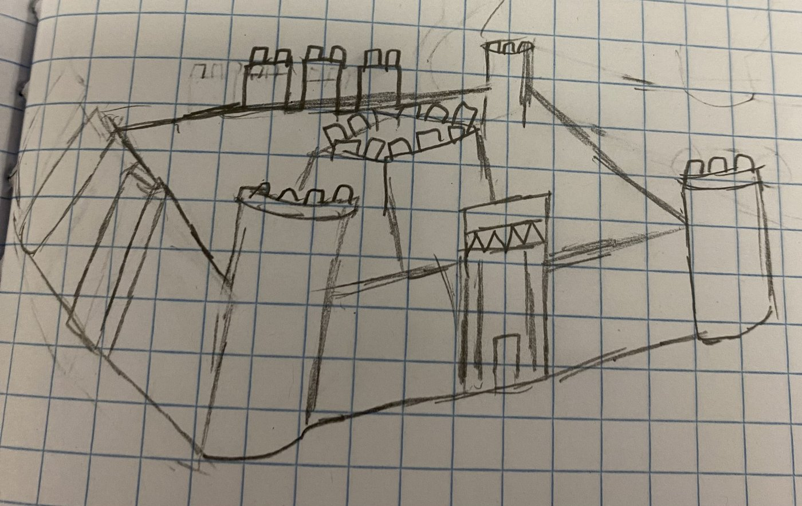
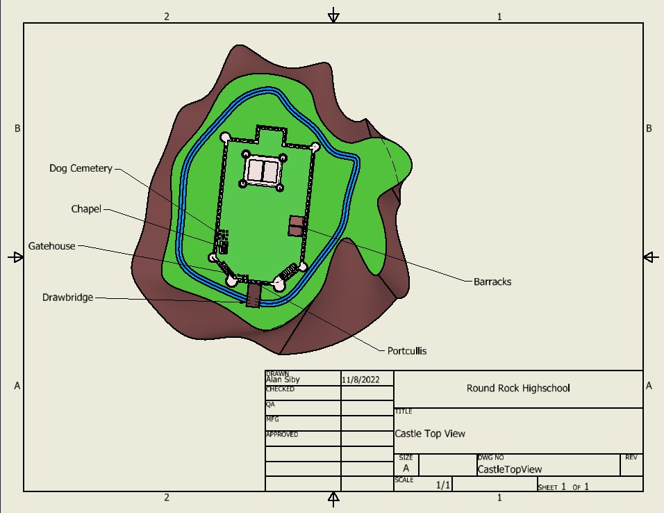

Modeled a highly detailed model castle as a single Inventor part — including a moat, drawbridge, and turrets — built entirely using advanced surfacing and modeling features.

Final Inventor drawing sheet — isometric view
Castles R Us Toy Design Company hired us to create a unique model castle to be marketed as both a children's toy and a collectible for medieval enthusiasts. The castle had to be modeled as a single Inventor part file, no greater than 4 inches in diameter, and include a full list of required features: a motte, windows of different sizes, a staircase, a moat, archer loopholes, at least one tower with a roof, crenelated walls, a flag, and at least three turrets.
Before opening Inventor, I sketched several rounds of the castle by hand — working out tower placement, wall layout, and the overall silhouette across different angles.



Early concept sketches exploring tower layout, wall structure, and overall castle silhouette
The project required using specific Inventor tools including Loft, Extrude with Taper, Mirror, Rectangular and Circular Pattern, Work Features, Revolve, Sweep or Coil, and Shell — plus at least six additional design elements like a drawbridge, gatehouse, or chapel.
The completed model was documented with a full Inventor drawing sheet, including a labeled top view identifying every required feature — from the gatehouse and drawbridge to the chapel and barracks.

Final Inventor drawing sheet — top view, with all required features labeled
I learned how to use the Coil feature, which was needed to create the ropes for the drawbridge, and how to use Shell to create hollow pieces. I also learned to solve problems through trial and error — whenever something went wrong with the design, I worked through multiple possible solutions rather than settling on the first fix.